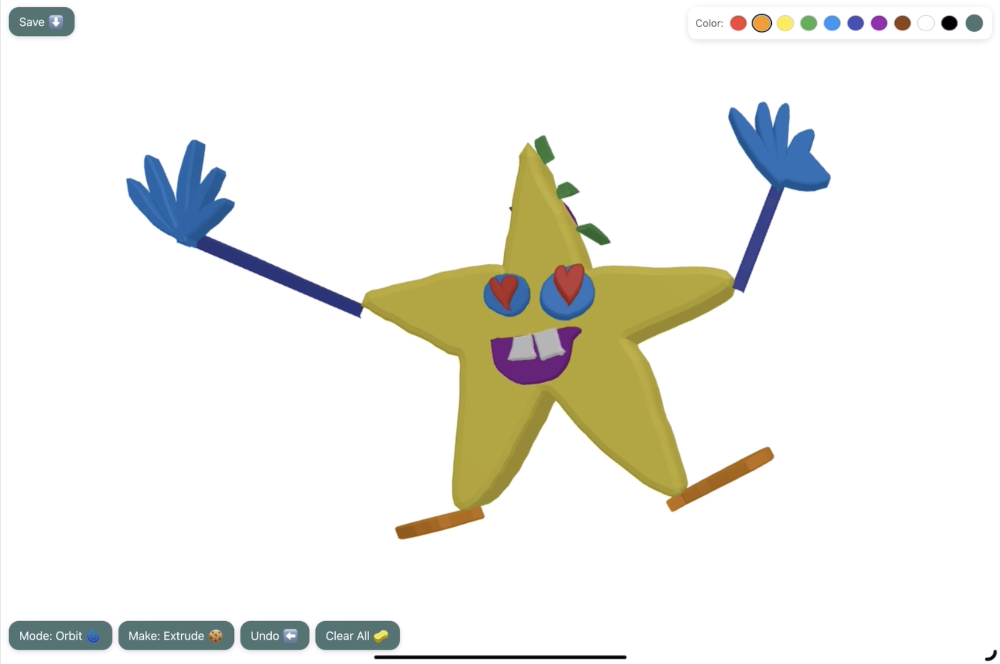
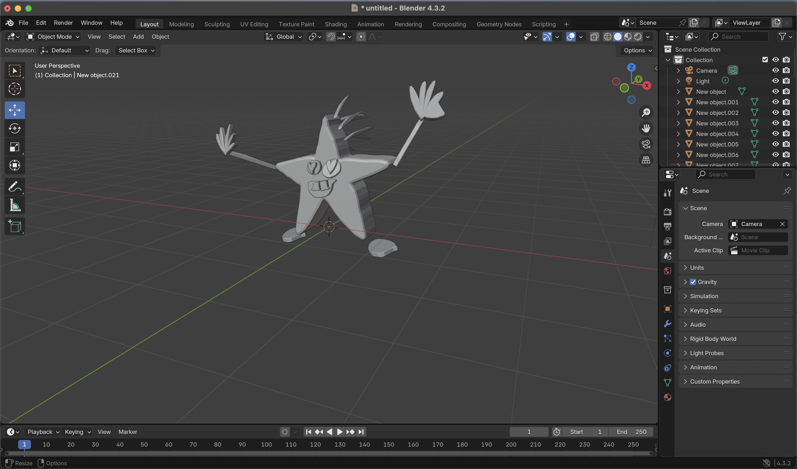
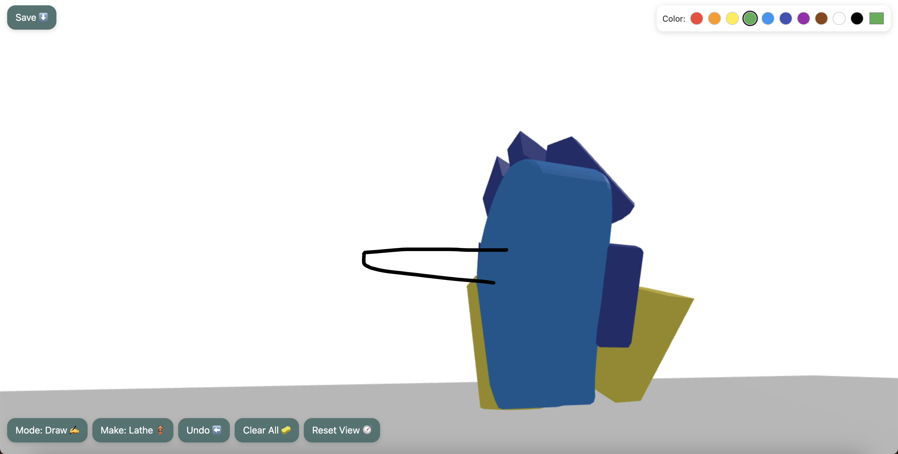
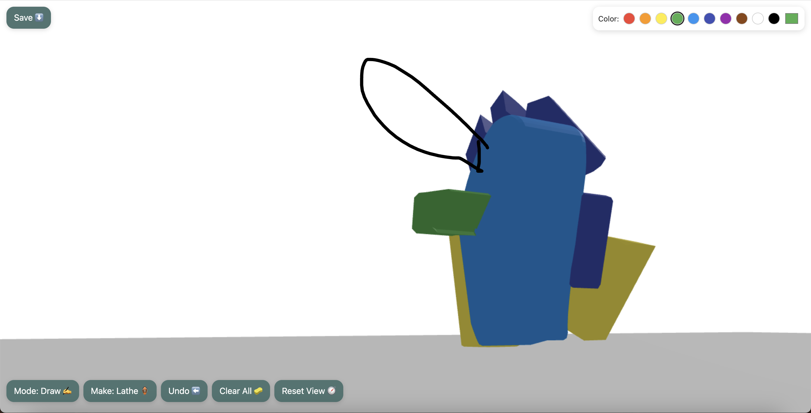
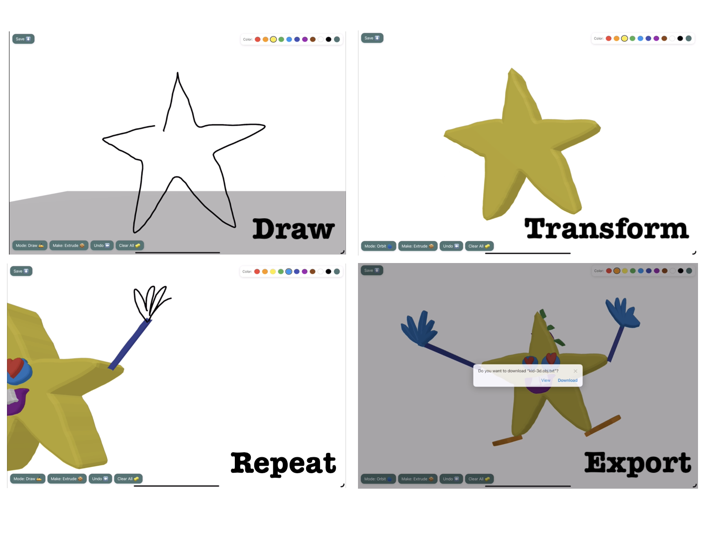

Purpose
Manifest is a touch-first 3D modeling tool I built to explore how drawing can become a direct entry point into computational creativity. Users can sketch a shape to create a solid, then draw on its surface to “grow” new parts. The goal was to turn a usually intimidating workflow into something experiential, playful, tactile, and immediately rewarding.
Usable on phones, iPads, and laptops, Manifest is meant to be portable and easily accessible to create at any time and scale. The system exports clean GLB, GLTF, OBJ, and STL files—letting a child’s curiosity flow all the way into fabrication tools like Blender and 3D printing.

Base Sketch to 3D
Exported file to BlenderProblem Statement & Solution
Traditional 3D modeling tools demand abstract spatial reasoning and precise manipulation—skills that take years to develop. Manifest reframes modeling as something approachable and forgiving. It gives young learners a low-barrier way to explore 3D thinking through gesture, play, and physical intuition.
Central Question
How can drawing function as an entry point for learning spatial reasoning and 3D thinking?
Objectives
- Redefine 3D creation as an embodied, gestural process
- Combine freehand sketching with mathematically valid geometry
- Maintain clean export fidelity for educational and fabrication use
- Design a visual, language-light interface for early learners
Manifest turns drawing gestures into geometry in a way that feels immediate and physical. Instead of navigating menus, users simply draw, orbit, and extend the form. Each stroke creates a local plane on the touched surface, then extrudes perpendicularly to generate new patches.
This mirrors how children naturally build things—additively, experimentally, and with a sense of discovery.
Process & Design
Interface Design
The interface layers a transparent sketching canvas over a WebGL viewport. Large touch targets make it tablet-friendly, and the camera never moves unexpectedly—spatial trust was essential. A “must-touch” rule guarantees that new geometry always grows from the existing form.
Geometry Pipeline
- Extrude / Lathe: Base shapes close loops automatically.
- Perpendicular Patches: Raycasts define local planes for surface extension.
- Lofting: Clean stitching of resampled cross-sections.
- Export: GLB/GLTF/OBJ/STL for fabrication and editing.


Research
Research Goals
I studied beginner-friendly tools like Tinkercad and Nomad Sculpt and observed how kids sketch during art activities. My aim was to merge the immediacy of drawing with the structural reliability of CAD tools.
Findings
- Younger or naive learners approach modeling visually, not procedurally—they draw before they measure.
- Immediate feedback builds confidence far more than precision tools.
- Over-constraining the system interrupts curiosity; forgiving geometry keeps engagement high.
Beginner vs Expert Workflows
Manifest is intentionally designed around how beginners think and create—through gesture, curiosity, and immediate feedback. The comparison below guided our interaction and geometry decisions.
Beginner Workflow
- Start by drawing, not planning
- Rely on visual intuition over precision
- React to results and explore
- Learn through play and iteration
- Refine only when needed
Expert Workflow
- Plan the final form before modeling
- Select precise tools intentionally
- Build geometry step-by-step
- Maintain clean topology
- Refine via measured adjustments
Testing & Play
I tested Manifest informally with teens and young adults with no CAD experience. Most users understood the workflow—draw, orbit, grow—within seconds. Immediate visual feedback and forgiving geometry helped sustain curiosity.
- Smooth stroke interpolation improved perceived drawing skill.
- Small offsets prevented mesh collisions.
- A one-sentence onboarding card dramatically boosted first-time success.
Spaces to improve included the angle of extrusion an addition would point at, looking at the user's perspective and length of the addition. It also needed to be made more clear that using two fingers, a user could move their relative location, while one finger shifted perspective. Logic was also added such that user's additions needed to connect to the existing structure, for design simplicity reasons, since in user studies a missed connection would result in the addition far removed from the original vector and unusable.
How It Works
- Stroke Capture: A top canvas records paths.
- Raycasting: Finds hit points and constructs local planes.
- Extrusion: Converts strokes into surfaces or solid forms.
- Camera: Orbit + reset maintain orientation.
- Editing: Tap-select parts for deletion or modification.
- Export: Clean mesh output for 3D printing & Blender.

What’s Next
- Stroke cleanup tools and boolean operations
- Project saving + creation gallery
- Dashboard for tutorials and drawing in 3D
- Guided builds for classrooms
Why This Project
Manifest reflects my broader interest in how creative tools can turn gesture into understanding. It explores how code, geometry, and imagination meet—and how design can make technical ideas like 3D modeling feel human, tangible, and genuinely fun.